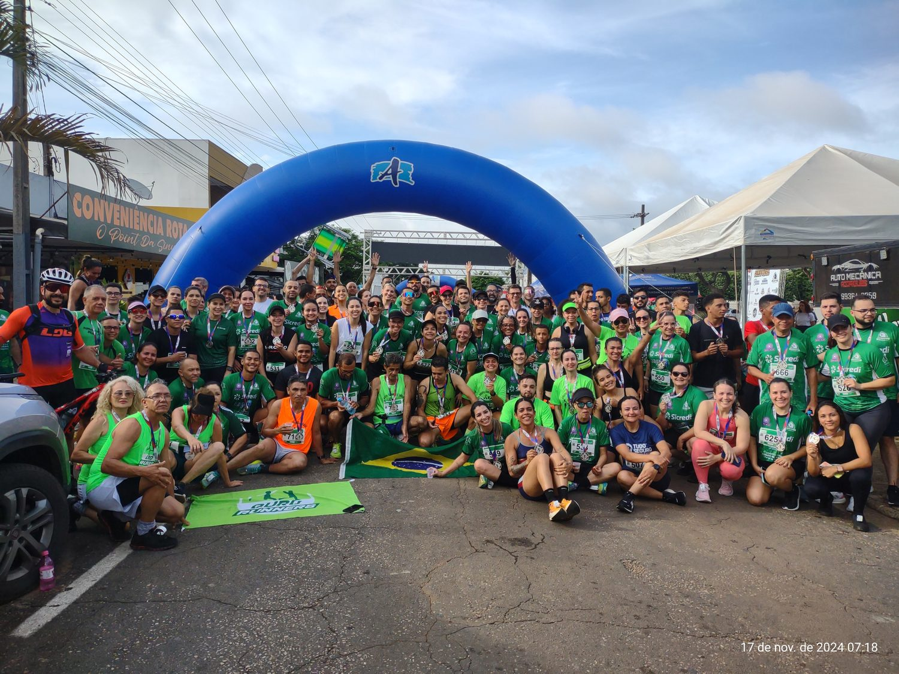
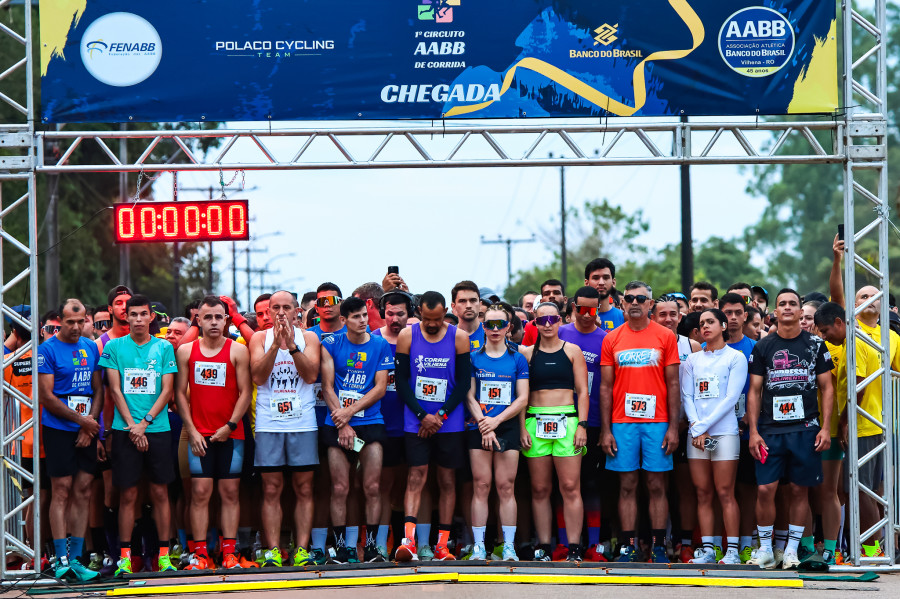
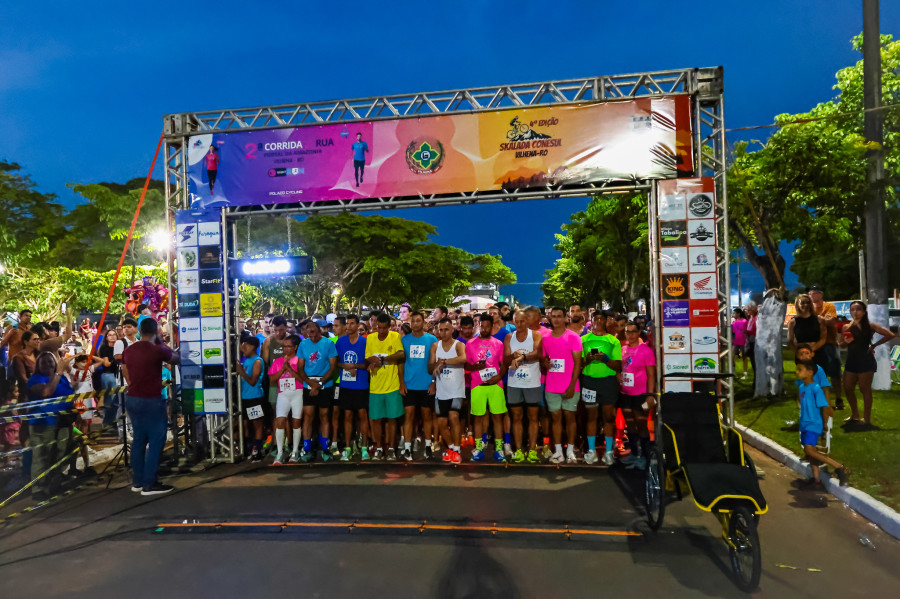

2024
1ª Corrida de Rua Cidade de Vilhena — Portal da Amazônia
17 de novembro · Organização Polaco · início da série atual
209concluintes de 5 km · 305 registros na modalidade
AEEC e Polaco Cycling Team Eventos: experiência na produção esportiva, compromisso com a comunidade e histórias construídas em Vilhena.

 AEEC
AEEC Polaco Cycling
Polaco CyclingPlanejar, reunir pessoas, transformar ideias em experiências reais. É assim que construímos competições e ações de impacto local.
A boa organização não aparece apenas no pórtico. Ela está em cada detalhe que faz o evento acontecer.
A AEEC atua em esporte, educação, inclusão e projetos comunitários. A Polaco Cycling Team Eventos reúne experiência operacional em competições e produção esportiva, com origem no ciclismo e consolidação nas corridas de rua.
Juntas, desenvolvem projetos próprios e colaboram com entidades, escolas, instituições e empresas na organização de eventos.

Um registro da comunidade esportiva que acompanha a trajetória dos eventos.
Fotografia do acervo fornecido pela organização · 17/11/2024Os registros a seguir mostram a evolução do trabalho. Cada indicador mantém seu significado original: inscritos, participantes divulgados ou concluintes.
17 de novembro · Organização Polaco · início da série atual
3 de agosto · Realização AABB/FENABB · planejamento e organização AEEC e Polaco
22 de novembro · Organização Polaco Cycling
26 de julho · Realização AABB/FENABB · planejamento e organização AEEC e Polaco
15 de novembro · Vilhena · comunicação digital integrada e Central do Atleta


A sequência atual da Corrida Portal da Amazônia começou em 2024. Eventos de outras organizações com nome semelhante não integram essa contagem.
2024
Início da série atualPortal da Amazônia
5
Corridas de ruaedições identificadas até 2026
2
Eventos previstosno calendário de 2027
1
Compromisso constantevalorizar pessoas por meio do esporte
Estrutura de trabalho pensada para entregar o evento completo. As atividades especializadas são organizadas e contratadas conforme o escopo.
Objetivos, formato, orçamento, regulamentos, percursos e cronogramas.
Estrutura, sinalização, kits, fluxos operacionais e equipes de apoio.
Informações ao público, soluções online, peças gráficas e atendimento aos atletas.
Contratação e acompanhamento de cronometragem, saúde, segurança e demais serviços necessários.
Montagem, alinhamento das equipes, gestão do percurso e execução no dia.
Resultados, fotografias, registros e avaliação das entregas.

Organização, acolhimento e atenção aos detalhes: é o trabalho que transforma uma prova em um encontro da comunidade.
Fotografia real do acervo esportivo · novembro de 2025.
Previsões de realização. Datas exatas e formatos ainda serão confirmados com as instituições envolvidas.
Galerias reais, resultados e canais de informação para consulta. Novos registros serão incorporados à apresentação com autorização.
AEEC & Polaco Cycling Team Eventos
Vilhena · Rondônia
Apresentação institucional destinada a entidades públicas, empresas, instituições e organizações esportivas.